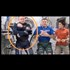

<!DOCTYPE html>
<html lang="en">
 <head>
<!-- Favicon -->
<link rel="shortcut icon" href="../../favicon.ico">
  <meta charset="utf-8"/>
  <title>
   How NASA Fakes ISS Interior
  </title>
  <meta content="Post on /v/Conspiracy from 2017-05-23 by NicholasDWolfwood." name="description"/>
  <meta content="How NASA Fakes ISS Interior" property="og:title"/>
  <meta content="Post on /v/Conspiracy from 2017-05-23 by NicholasDWolfwood." property="og:description"/>
  <link href="../../static/css/page.css" rel="stylesheet"/>
  <meta content="https://voat.conspiracy.hackliberty.org/thumbnails/33/f1/33f128cc-1416-4158-8199-509f5304dca4.jpg" property="og:image"/>
  <meta content="https://voat.conspiracy.hackliberty.org/v/conspiracy/1882230.html" property="og:url"/>
  <meta content="width=device-width, initial-scale=1" name="viewport"/>
  <link href="https://voat.conspiracy.hackliberty.org/v/conspiracy/1882230.html" rel="canonical"/>
  <meta content="article" property="og:type"/>
  <meta content="Voat /v/Conspiracy Archive" property="og:site_name"/>
  <meta content="en_US" property="og:locale"/>
  <meta content="summary_large_image" name="twitter:card"/>
  <meta content="How NASA Fakes ISS Interior" name="twitter:title"/>
  <meta content="Post on /v/Conspiracy from 2017-05-23 by NicholasDWolfwood." name="twitter:description"/>
  <meta content="https://voat.conspiracy.hackliberty.org/thumbnails/33/f1/33f128cc-1416-4158-8199-509f5304dca4.jpg" name="twitter:image"/>
 </head>
</html>
<body class="dark">
 <div id="container">
  <!-- array (
  'submissionid' => 1882230,
  'creationDate' => '2017-05-23 02:22:33',
  'domain' => 'youtube.com',
  'formattedContent' => NULL,
  'isAdult' => 0,
  'isAnonymized' => 0,
  'subverse' => 'Conspiracy',
  'thumbnail' => '33f128cc-1416-4158-8199-509f5304dca4.jpg',
  'title' => 'How NASA Fakes ISS Interior',
  'url' => 'https://www.youtube.com/watch?v=WonPPfYD3xg',
  'userName' => 'NicholasDWolfwood',
  'archivedLink' => NULL,
  'archivedDomain' => NULL,
  'isDeleted' => 0,
) -->
  
<header>
  <nav class="navbar navbar-dark bg-primary">
    <a class="navbar-brand" href="../../index.html">v/Conspiracy Archive</a>
    <div class="navbar-collapse">
      <ul class="navbar-nav">
        <li class="nav-item">
          <a class="nav-link" href="../../date/page-1.html">Date</a>
        </li>
        <li class="nav-item">
          <a class="nav-link" href="../../comments/page-1.html">Comments</a>
        </li>
        <li class="nav-item">
          <a class="nav-link" href="../../search.html">Search</a>
        </li>
        <li class="nav-item dropdown">
          <a class="nav-link dropdown-toggle" href="#" id="navbarDropdown" role="button" 
             data-toggle="dropdown" aria-haspopup="true" aria-expanded="false">
            subreddits
          </a>
          <div class="dropdown-menu" aria-labelledby="navbarDropdown">
            <a class="dropdown-item" href="https://reddit.conspiracy.hackliberty.org">r/conspiracy</a>
            <a class="dropdown-item" href="https://reddit.pizzagate.hackliberty.org">r/pizzagate</a>
            <a class="dropdown-item" href="https://voat.conspiracy.hackliberty.org">v/conspiracy</a>
            <a class="dropdown-item" href="https://voat.pizzagate.hackliberty.org">v/pizzagate</a>
          </div>
        </li>
      </ul>
    </div>
  </nav>
</header>

  <div class="content" role="main">
   <div class="sitetable linklisting" id="siteTable">
    <div class="submission id-1882230 link type-text" id="submission-1882230">
     <a name="submissionTop">
     </a>
     <p class="parent">
     </p>
     <a class="thumbnail may-blank" href="https://www.youtube.com/watch?v=WonPPfYD3xg" target="_self">
      
     </a>
     <div class="entry unvoted">
      <p class="title">
       <a class="title may-blank" href="https://www.youtube.com/watch?v=WonPPfYD3xg" tabindex="1" target="_self" title="How NASA Fakes ISS Interior">
        How NASA Fakes ISS Interior
       </a>
       <span class="domain">
        (
        <a href="https://archive.searchvoat.co/search.php?d=youtube.com">
         youtube.com
        </a>
        )
       </span>
      </p>
      <p class="tagline">
       submitted
       <time datetime="2017-05-23T02:22:33+00:00" title="05/23/2017 2:22:33 AM">
        2017-05-23T02:22
       </time>
       by
       <span class="userattrs">
        <a class="author may-blank" href="https://archive.searchvoat.co/search.php?u=NicholasDWolfwood">
         NicholasDWolfwood
        </a>
       </span>
      </p>
      <ul class="flat-list buttons">
       <li class="first">
        <a class="comments may-blank" href="https://archive.searchvoat.co/v/Conspiracy/1882230" rel="nofollow">
         2 comments
        </a>
       </li>
      </ul>
     </div>
     <div class="child">
     </div>
     <div class="clearleft">
     </div>
    </div>
    <div class="clearleft">
    </div>
   </div>
   <div class="horizontal-line">
   </div>
   <div class="commentarea">
    <div class="sitetable nestedlisting" id="siteTable">
     <div class="child id-9241592 comment even" style="">
      <div class="entry unvoted">
       <div class="noncollapsed" id="9241592" style=";">
        <p class="tagline">
         <a class="author may-blank" href="https://archive.searchvoat.co/search.php?u=keyzersoze">
          keyzersoze
         </a>
         <span class="userattrs">
         </span>
         <time datetime="2017-05-23T05:57:00+00:00" title="5/23/2017 5:57:00 AM">
          2017-05-23T05:57
         </time>
        </p>
        <div class="usertext-body may-blank-within" id="commentContent-9241592">
         <div class="md">
          <p>
           <p>
            Hard to take this guy seriously with the potato hes using to film himself with, while touting his visual effect accumen.
           </p>
          </p>
         </div>
        </div>
        <ul class="flat-list buttons">
         <li class="first">
          <a class="bylink" href="https://archive.searchvoat.co/v/Conspiracy/1882230/9241592" rel="nofollow">
           link
          </a>
         </li>
        </ul>
       </div>
      </div>
      <div class="child id-9241813 comment odd" style="">
       <div class="entry unvoted">
        <div class="noncollapsed" id="9241813" style=";">
         <p class="tagline">
          <a class="author may-blank" href="https://archive.searchvoat.co/search.php?u=qwop">
           qwop
          </a>
          <span class="userattrs">
          </span>
          <time datetime="2017-05-23T06:21:13+00:00" title="5/23/2017 6:21:13 AM">
           2017-05-23T06:21
          </time>
         </p>
         <div class="usertext-body may-blank-within" id="commentContent-9241813">
          <div class="md">
           <p>
            <p>
             The problem is he's also using potato footage from NASA.
            </p>
            <p>
             MPEG video compression artifacts produce just the effects he's describing. It smears video, and makes blocks of video pop in and out during B-frame updates. MPEG video is a block and motion compression technology, and when there's data missing from the stream you will get small square blocks out of place (missing motion data), or smearing effects.(missing square data).
            </p>
            <p>
             He touts himself as some sort of video processing guru, but yet he doesn't seem to have any idea of how MPEG compression works.
            </p>
            <p>
             <a href="https://www.youtube.com/watch?v=j5nZhf8SjXw">
              https://www.youtube.com/watch?v=j5nZhf8SjXw
             </a>
            </p>
           </p>
          </div>
         </div>
         <ul class="flat-list buttons">
          <li class="first">
           <a class="bylink" href="https://archive.searchvoat.co/v/Conspiracy/1882230/9241813" rel="nofollow">
            link
           </a>
          </li>
         </ul>
        </div>
       </div>
      </div>
     </div>
    </div>
   </div>
  </div>
 </div>
<!-- Footer Section -->
<footer class="container-fluid mt-3">
  <p class="small mb-0">
    /v/conspiracy archive has 42504 posts and 159856 total comments.
    <a href="https://git.hackliberty.org/c0mmando/voat-conspiracy-archive/">source code</a>.
  </p>
</footer>

<script src="../../static/js/jquery-3.7.1.slim.min.js"></script>
<script src="../../static/js/comments-toggle.js"></script>

</body>
